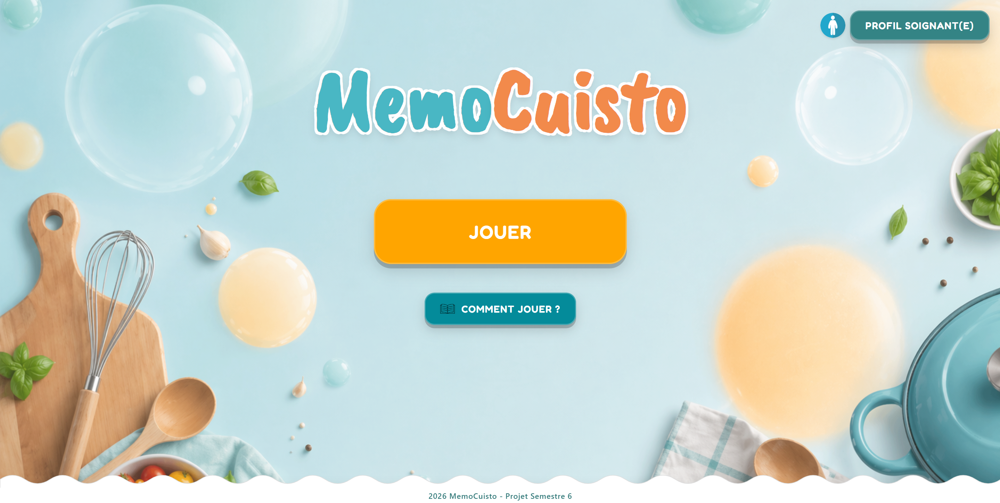
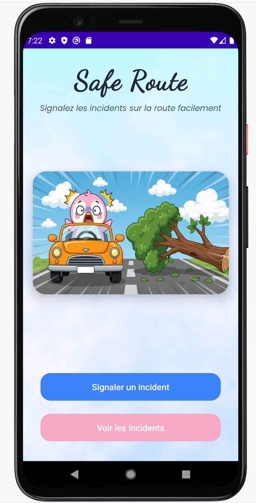
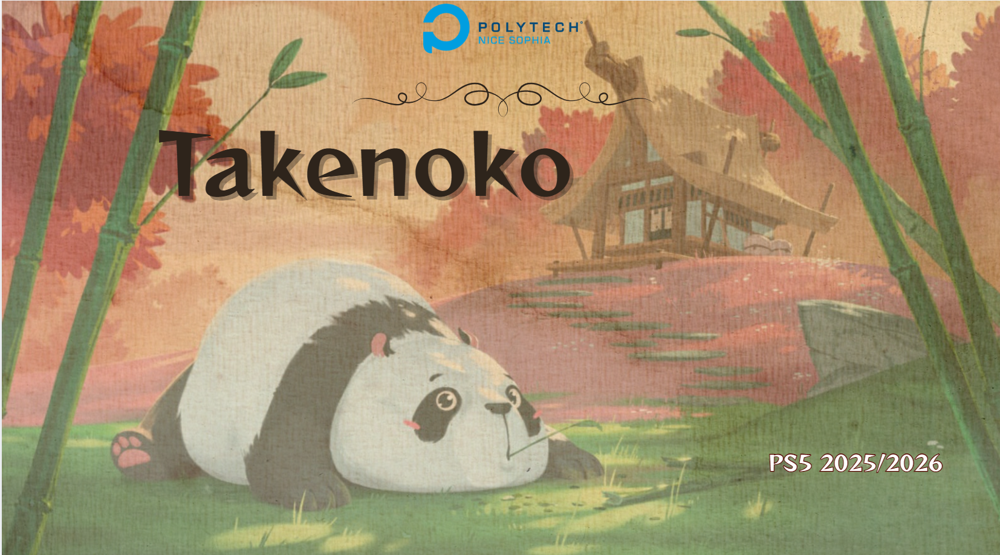
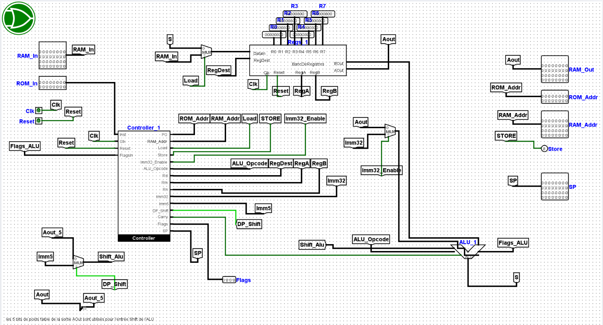
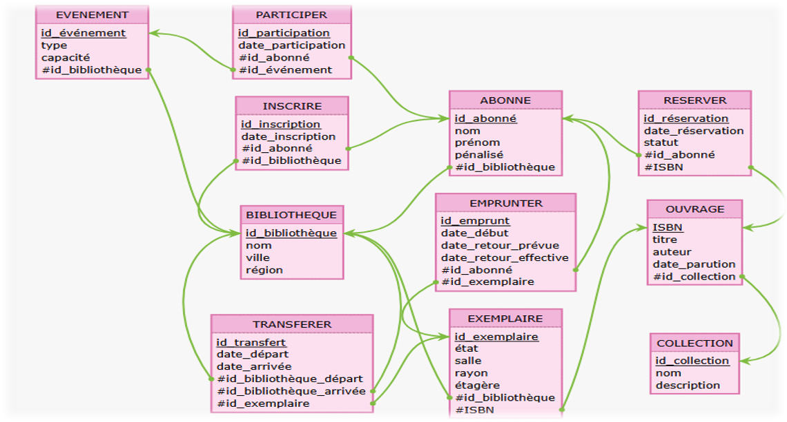
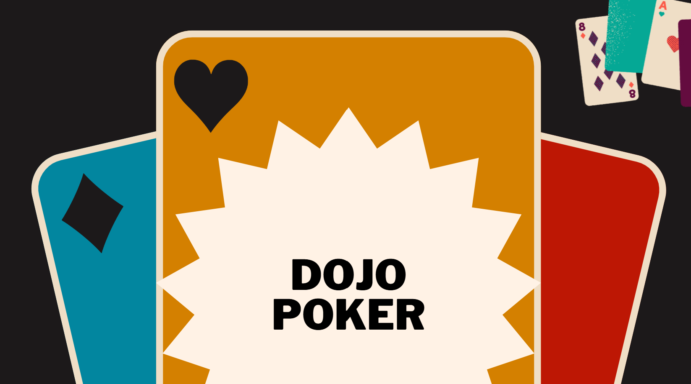
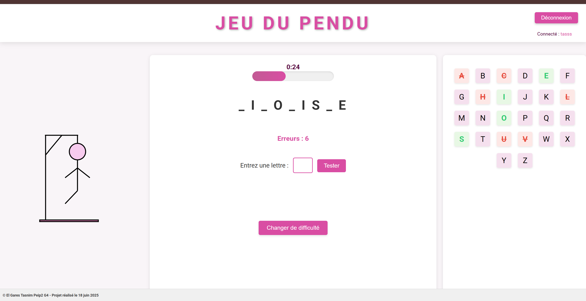

Tasnim El Gares
Élève-ingénieure en informatique | Polytech Nice-Sophia
Bienvenue sur mon portfolio. Vous y trouverez une présentation de mon parcours, de mes compétences ainsi qu’une sélection des projets que j’ai réalisés au cours de ma formation.
Localisation : Juan-les-pins, France
Langages : Java, Python, C, SQL, Angular, Express.js
Objectif : Stage / Alternance Full-Stack
À propos
Élève-ingénieure en informatique à Polytech Nice-Sophia, j’ai choisi cette spécialité pour la diversité des problématiques qu’elle permet d’aborder et pour l’impact concret que peuvent avoir les solutions développées.
Au-delà de l’aspect technique, je m’intéresse particulièrement à la compréhension des besoins et à leur traduction en solutions logicielles pertinentes. J’apprécie analyser une problématique dans son ensemble, identifier les attentes des utilisateurs et concevoir des applications fiables, maintenables et cohérentes avec leurs objectifs.
Mon parcours m’a permis de développer rigueur, organisation et méthode dans la conduite de projets. Les travaux réalisés en équipe m’ont également appris l’importance de la communication, de la collaboration et du partage des connaissances pour mener un projet à bien.
Curieuse de nature, j’aime explorer de nouveaux domaines, découvrir de nouvelles technologies et approfondir continuellement mes compétences. J’accorde une attention particulière à la qualité du travail réalisé, tout en cherchant à apporter des idées nouvelles lorsque cela permet d'améliorer l'expérience utilisateur ou la solution proposée.
Compétences
Langages
Java (POO, tests, Maven), Python, C, SQL (PostgreSQL), JavaScript, Angular, Express.js
Outils
Git / GitHub (Flow, PR), Docker, JUnit / Mockito, Playwright (E2E), SonarQube
Concepts
Qualité logicielle, Analyse des besoins, Conception modulaire, Design Patterns, Tests automatisés, Clean Code, Architecture logicielle
Projets
Tous les projets triés du plus récent au plus ancien. Cliquez sur une carte pour voir le code.

App de stimulation cognitive (Angular/Express.js)

App Android (Design Patterns)

Moteur de jeu Java

Processeur 32 bits

PostgreSQL (Schéma relationnel)

Java poker engine

Frontend (Jeu du pendu)
MémoCuisto
App de stimulation cognitive (Alzheimer). Développée en Full-Stack (Angular/Express.js), conteneurisée avec Docker et testée avec Playwright.
GitHubTakenoko
Moteur de jeu Java. Stratégies de robots, actions polymorphes et couverture de tests automatisés (unitaires + intégration).
GitHubSafeRoute
App Android (Java/XML) de signalement d'obstacles. Projet pédagogique basé sur l'application de Design Patterns (MVC, Factory, Observer, Adapter) pour une architecture modulaire.
GitHubPARM
Processeur 32 bits. Conception pédagogique (Logisim) : ALU, contrôleur, registres, flags et exécution assembleur.
GitHubBibliothèques
PostgreSQL. Modélisation de schéma relationnel, normalisation, triggers et requêtes SQL avancées.
GitHubDojo Poker
Java. Implémentation des règles complètes du poker avec comparateur de mains et hiérarchie de rangs.
GitHubHangman app
Frontend. Jeu du pendu connecté à une API avec gestion de l'authentification JWT côté client.
GitHub